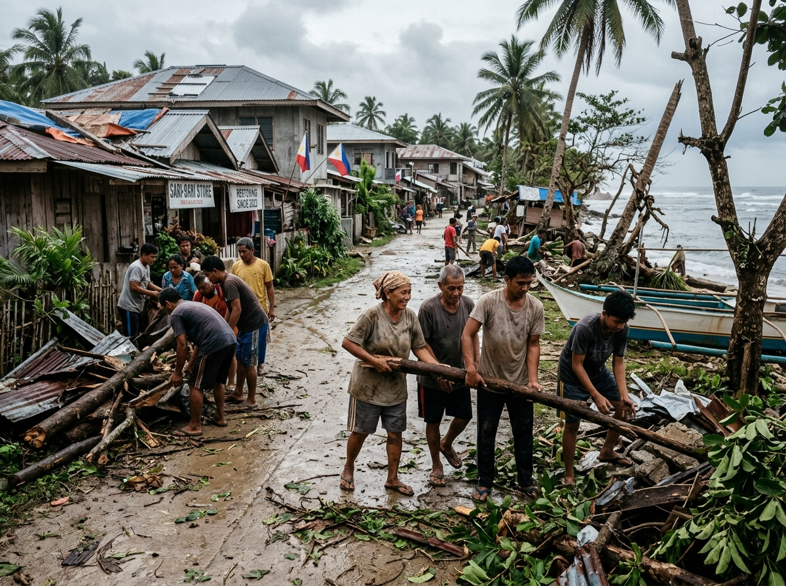
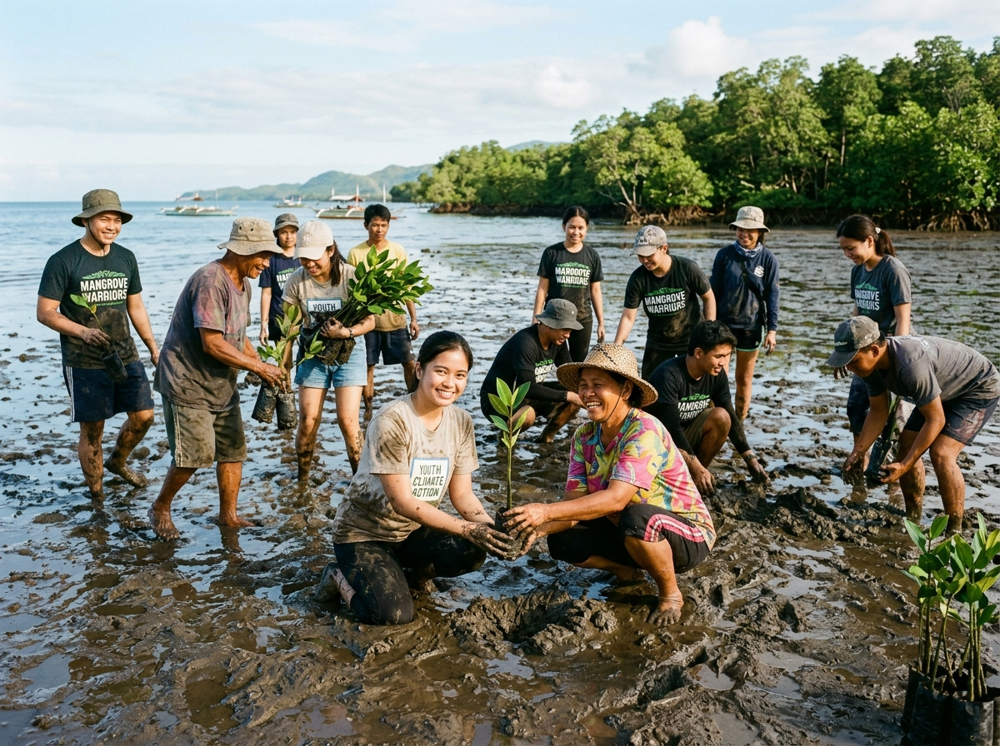
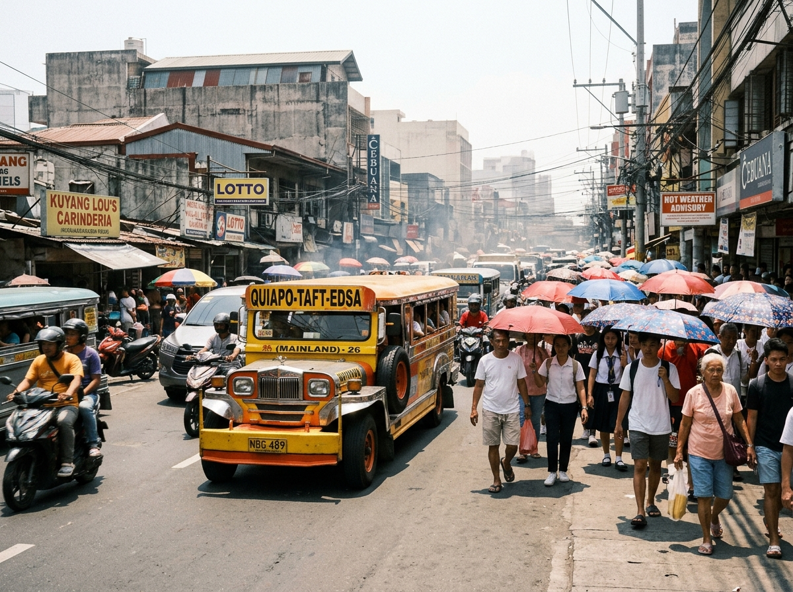

Curatorial Thesis: Visual Literacy in Climate Justice
Every photograph featured in this collection is curated to honor the dignity of our subjects. We reject the "poverty porn" visual trope that strips communities of agency. Instead, our compositions place human figures at the center of action—hauling timber, planting roots, and raising banners—embodying solidarity over victimization.